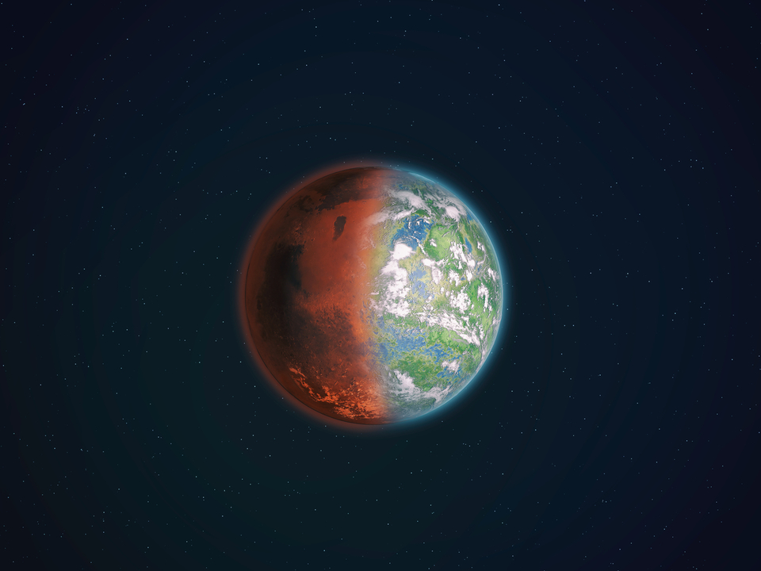
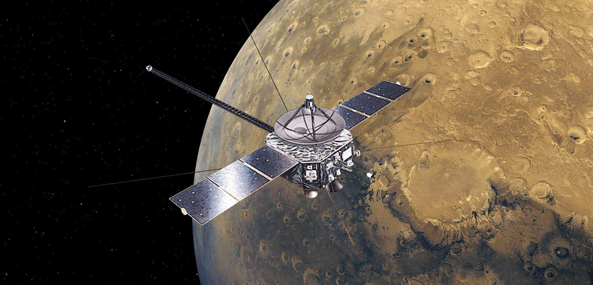

火星の特徴
 火星の地表の岩石の中には酸化鉄がふくまれている。火星にはわずかに酸素があって、その酸素が地表を酸化させている。その影響で火星は赤く見える。
火星の地表の岩石の中には酸化鉄がふくまれている。火星にはわずかに酸素があって、その酸素が地表を酸化させている。その影響で火星は赤く見える。
火星にはオリンポス山、アスクレウス山、パボニス山、アルシア山といった火山や、マリナー谷がある。火山活動がおきたときに、地下の氷がとけて洪水のように流れだし、川のあとのように残っていたり、雨の流れたような痕もある。そして、地球の北極や南極と同じように、極冠とよばれる氷もあり、火星に四季があることがわかっている。
地球に似た火星
火星は、地球とにている部分が多い惑星である。四季の変化もあり、1日の長さも、24時間37分22秒と、ほぼ同じ。地球とちがうところは、太陽のまわりを1周するのに約687日もかかるため、四季の長さは地球の2倍に。そして、星は地球の約半分の大きさで、重力は1/3しかありません。
昔は火星にも、ぶ厚い大気や海があったと考えられていますが、重力が弱かったために、大気は宇宙空間へきえ、海もなくなってしまった。
火星の大気は、二酸化炭素95.3％、窒素2.7％、酸素0.15％、その他1.85％。そんな火星を地球のような環境にして、人類が移住できるようなテラフォーミング計画もある。
火星探査機「のぞみ」
1998年に日本が打ち上げた火星探査機「のぞみ」は、日本初の星探査機で、火星の上層大気と太陽風との相互作用を研究することや火星の磁場を観測することなどが目的であった。火星への途上でトラブルが発生し、軌道をかえて予定より遅れて火星までは到達したものの、火星を周回する軌道に投入することはできなかった。